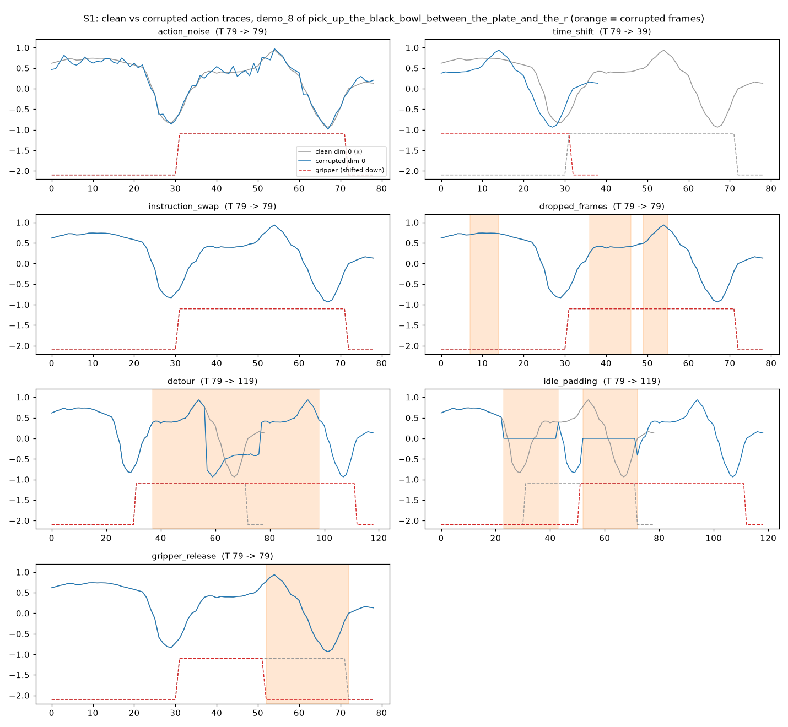
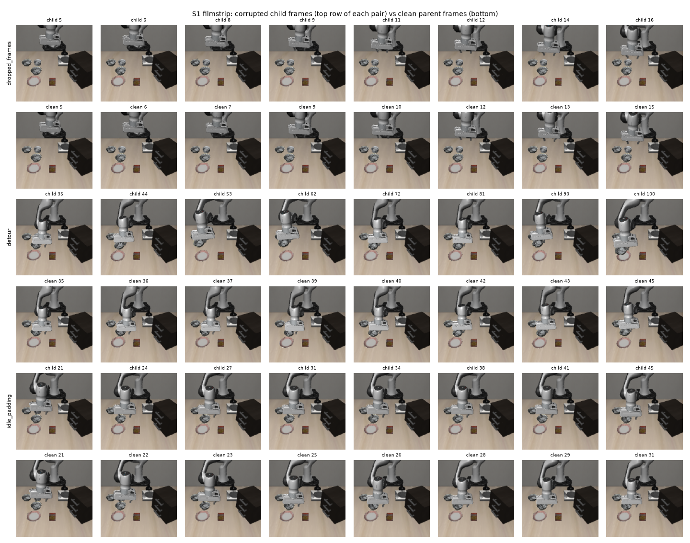

← Ground truth (injection experiment)
Seven pure functions that turn one clean LIBERO demonstration into a labelled bad one, every action kept inside [−1, 1], each checked on 118 real episodes.
The PoC's key trick is to plant bad data whose location we know, then ask whether a method finds exactly those episodes. §2.5 lists the corruption types to plant, and §8.10 adds two aimed at specific metrics (idle padding should hurt speed, gripper-release noise should hurt reliability). RoboDrop's appendix fixes the noise level and the shift size. Two owner decisions bind this story: clip every corrupted action to [−1, 1], and build all types except the altered camera viewpoint (that needs simulator re-rendering).
Deliberately corrupt known subsets of training data: noisy or shifted actions, mismatched language instructions, altered camera viewpoints, or low-quality teleoperation demos. Then check whether your attribution method flags exactly those. — §2.1 item 4, p. 3
Action corruption adds zero-mean Gaussian noise with standard deviation 0.25σa … Temporal corruption shifts the action sequence by two seconds relative to the observations. — RoboDrop App. A.1, p. 13
| File / function | What it does |
|---|---|
vlapoc/corruptions.py::make_edit | The one entry point: type name in, a derive.EpisodeEdit out (a function over the stored episode plus a params record that becomes the label). |
action_noise, time_shift, instruction_swap, dropped_frames, detour, idle_padding, gripper_release | The seven types. Each is one closure with its own source quote and parameter record (every parameter tagged quoted, measured or inferred). |
clip_actions | Owner decision 1: clip to [−1, 1] and count how much it bit (n_clipped, frac_clipped, frac_beyond_clean_range). |
eligible, final_release, constant_gripper_windows | Which episodes can take which corruption (a release needs a carry phase of at least 30 steps). |
scripts/verify_corruptions_s1.py (387 lines) | Runs every transform in memory on 118 real v0 candidates per type and checks the invariants; second-process hash check for determinism. |
vlapoc/derive.py::EpisodeEdit | Two new fields, new_task and hypothesis, with defaults so older callers still work. |
| Type | What it does | Length | Metric hypothesis (PoC states only these two) |
|---|---|---|---|
action_noise | Gaussian noise at 0.25·σa on the six arm dimensions, then clip. The gripper stays binary (dims 0–5, inferred; RoboDrop does not say). | T | none stated |
time_shift | Trim. Child = frames 0 … T−41; each frame keeps its images and state, its action is the parent's action 40 steps later (a′[t] = a[t+40]). 40 steps = 2 s × 20 fps. | T − 40 | none stated |
instruction_swap | The task string becomes another task's instruction from the same suite. True provenance (task_name, episode_id) is kept, as in a real annotation error. | T | none stated |
dropped_frames | Sample-and-hold of one camera in bursts of 1–10 frames until about 20% of frames are held (LeRobot's read_latest behaviour). | T | none stated |
detour | A 21-frame window in [0.2T, 0.8T] is played forward, backward (arm actions negated), then forward again. | T + 40 | none stated |
idle_padding | Two 20-frame pauses in [0.2T, 0.8T]: observation held, arm action 0, gripper held. | T + 40 | speed, not reliability (§8.10 p.17) |
gripper_release | Gripper forced open for the 20 steps before the episode's final release (a premature drop). | T | reliability, not speed (§8.10 p.17) |
| AC | Source | Result | Evidence |
|---|---|---|---|
AC1.1 Seven types exist; each label's params carries source, tagged parameters, corrupted_frames | PoC §2.5 p.5, §8.10 p.17 | ✅ | verify_corruptions_s1.py --version v0 --per-type 100 --seed 0 → check_params on 118 × 7 outputs, 0 failures (artifacts/s1_r2_run1.txt) |
| AC1.2 Range: all actions in [−1, 1]; gripper exactly {−1, +1} | Owner decision 1 | ✅ | invariant_failures = 0 in all seven rows, 118 episodes each |
AC1.3 Clip accounting for action_noise; other six record 0 | Owner decision 1 | ✅ | n_clipped 521 of 167,846 values; 0.72% of dims 0–2; 1.69% of dims 0–2 land in (0.9375, 1] |
| AC1.4 Lengths and content per type (time_shift: T−40, parent frames 0…T−41, parent actions 40…T−1, bit for bit) | PoC §2.5 p.5; ruling A | ✅ | 0 invariant failures; images of detour / idle_padding / dropped_frames are byte-identical to some parent image; no consecutive duplicate in detour |
| AC1.5 (amended) Same (seed, episode_id) gives the same hash in a second process for all seven; a different seed changes the five stochastic types | vla-build; analysis-r1 | ✅ | Second process with --check-hashes: all seven True. Seed 0 vs 1 changes: noise, dropped, idle 118/118; detour 112/118 (94.9%); swap 105/118 (89.0%); time_shift and gripper_release 0/118 by design (asserted) |
| AC1.6 Eligibility over the 960 candidates | Design D3 | ✅ | 960 for six types, 884 for gripper_release (907/960 have a final release); every type eligible in all 20 tasks |
| AC1.7 Grounding docstring cites §2.5, §8.10, §4.5, RoboDrop A.1; inferred parameters stated | vla-build | ✅ | Read in the module docstring; the dims 0–5 divergence from v1 is stated |
| AC1.8 (ruling A) A time_shift child's idle steps equal the parent's idle steps within a[40:T] | Owner ruling A | ✅ | Checked per episode; over 118 episodes max 2, p99 2, above 0 in 6 (clean maximum run is 21) |
AC1.5 was wrong as first written, not the code. The plan said a different seed changes every type. time_shift and gripper_release have no random draw (a fixed 40-step shift, a fixed 20 steps before the release), so no seed can change them. The analyzer reproduced this exactly (analysis-r1) and the planner amended the criterion. Measured, not a regression.
Two real time_shift episodes in v3, both from the answer key. The transform is the same; what it leaves behind differs.
| Episode | Parent T | Child T | Hashes (parent → child) | Label |
|---|---|---|---|---|
libero_spatial/pick_up_the_black_bowl_between_the_plate_and_the_ramekin_and_place_it_on_the_plate/demo_34 | 167 | 127 | c9836ec9be16 → 7b60b2dcf25a | length_change −40, corrupted_frames [[0, 127]], hypothesis "none stated" |
libero_spatial/pick_up_the_black_bowl_on_the_cookie_box_and_place_it_on_the_plate/demo_49 | 90 | 50 | 07b94b5b7711 → 8bdb68344bae | length_change −40, corrupted_frames [[0, 50]] |
Parent lengths are child length plus 40 (measured child lengths 127 and 50 from artifacts/summary_examples2.txt). The second episode is already short, so the 40-step trim makes it 50 steps, the shortest episode relative to its task among the 882 scored (rank 1 from the short end). The first was an unusually long demo, so even trimmed it stays longer than its task's median, and a length statistic ranks it 864th of 882 from the short end: missed. That spread is why time_shift is the hardest type for the heuristics (S5).
A real label, the gripper_release on …between_the_plate_and_the_ramekin…/demo_13 (artifacts/summary_examples.txt and the answer key):
corrupted_frames [[57, 77]] # 20 steps before the final release
final_release_index 77 # 0.875 of the way through the episode
carry_steps 40
n_clipped 0 # this type never changes arm values
hypothesis reliability (drops), not speed (PoC §8.10 p.17; §4.5 p.11)
parameters.release_steps value 20, basis inferred ("1 s at 20 fps; stays inside the carry phase")
time_shift (top right): the child is 39 steps long against 79, shaped like the parent's later actions. detour and idle_padding grow from 79 to 119 steps. gripper_release flips the gripper to open 20 steps before the real release. instruction_swap looks identical here because it only changes the text.
dropped_frames some child frames repeat the previous image while the clean frames keep moving. In detour the arm goes back along its path. In idle_padding the child frames stay still while the parent moves on. Every image is a real parent frame; none were re-rendered.detour reverses motion by negating arm deltas (inferred from LIBERO's delta control). It was not replayed in the simulator to confirm the arm really retraces its path.